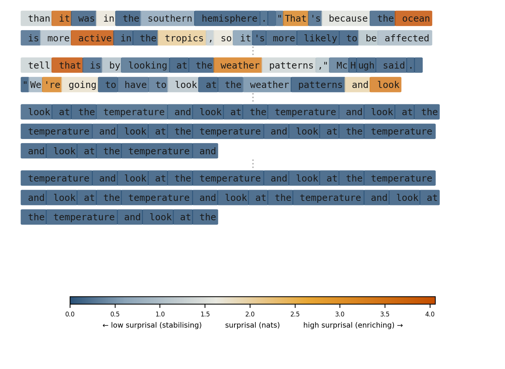
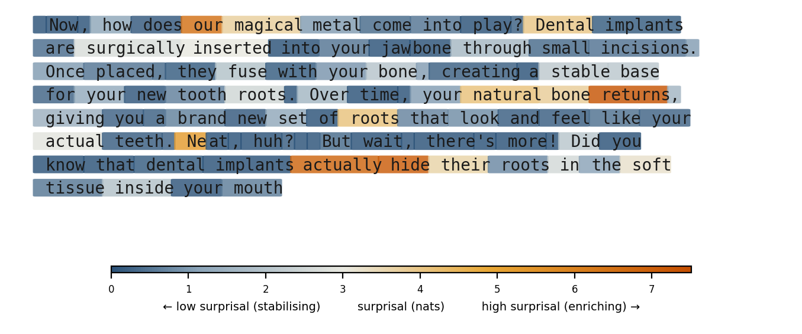
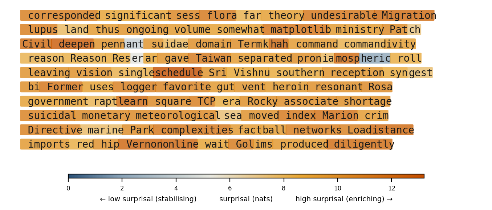

Integration
Compression, distortion, novelty, and meaning
Abstract
The autoregressive loop solves a problem Shannon characterised in 1948: transmitting a high-entropy source through a bandwidth-limited channel. A transformer’s internal state at any generation step — the full residual stream conditioning the next-token prediction — occupies a space of thousands of dimensions. The output is a single token from a finite vocabulary. The mismatch is not metaphorical. Each token is a channel use, and the sequence collectively encodes what no single token could carry.
This paper develops the consequences of taking this bottleneck seriously. The forward pass builds the representations that must pass through it: each layer solves a rate-distortion problem under a progressively more abstract distortion measure, generating representational structure whose predictive organisation grows even as mutual information with the input is bounded by the data processing inequality. The autoregressive loop then composes these compressions sequentially — and this composition is fundamentally ambivalent. The enrichment fraction — the proportion of tokens doing novel compressive work over a window of generation — determines the character of the output: whether it is productive, degenerate, or noise. The distinction is invisible in fluency metrics but directly measurable via the model’s own surprisal — though whether the receiver is also enriched depends on the alignment of their respective distortion measures.
The framework generates testable predictions about the dynamics of the enrichment fraction — its decay in unconstrained generation, its non-monotonic relationship with sampling temperature, its scaling with model size — alongside theoretical commitments about internal representational structure. It reframes the grounding problem as a rate-distortion question with measurable parameters and characterises alignment as a projection bottleneck between the receiver’s distortion measure and the narrow feedback channels available to communicate it.
Preface
This paper was written in collaboration between a human author and Claude, an AI assistant built by Anthropic. The collaboration is acknowledged plainly because the paper is itself an instance of the integration it describes — a traversal through a shared representational space, each contribution conditioning what came next. Whether the resulting trajectory was enriching or degrading is for the reader to judge; the framework developed here provides the vocabulary for doing so.
This is a living document (v0.7-12-gb8462ea). The current version, source, and revision history are available at github.com/ddisisto/integration-framework.
1 The Compression Hierarchy
Large language models build, across their layers, progressively more abstract representations of their input — from surface statistics through syntactic structure to semantic relationships. At each layer, information about the specific input is traded for structure that generalises across inputs. The final layers project this rich internal state through a radical bottleneck — a single token selected from a finite vocabulary — and the autoregressive loop repeats the process, constructing a sequential code that carries, one token at a time, what no single token could express.
This is compression, but not in the sense the word usually evokes. It is not reducing file sizes. It is building internal structure that preserves what matters — for progressively more abstract definitions of “matters” — while discarding what does not. Understanding what these systems do, what they are capable of, and where they fail requires taking this compression seriously and asking what kind of compression it is.
1.1 The one sharp boundary
There is exactly one clean distinction in the landscape of compression: lossless versus lossy.
Lossless compression — Huffman coding, Lempel-Ziv, arithmetic coding — exploits statistical redundancy to reduce bits without discarding anything. The original signal is perfectly recoverable. No judgement is required about what matters; everything is preserved. A gzip model of English text has learned nothing about English. It has learned which byte sequences recur in a particular file. Applied to a different file, it starts from scratch. This is compression in the narrowest and most common sense of the word: reduction without loss, pattern-matching without understanding.
The moment compression becomes lossy, something qualitatively different enters. A lossy compressor must decide what to discard — which means it must decide what counts as acceptable distortion. And that decision is not given by the data. It is a choice, made by or on behalf of an agent, reflecting what that agent considers worth preserving.
Rate-distortion theory (Shannon, 1959) formalises this precisely: the minimum rate (bits) required to encode a source at a given level of distortion is determined by the distortion measure — the function specifying what counts as loss. Shannon’s deepest insight for the present framework is that the distortion measure is a choice. It encodes what the compressor treats as relevant. This is the point at which perspective enters compression — not subjectivity in the philosophical sense, but relevance: compression relative to a receiver, a purpose, a context. The next section traces where this leads.
1.2 The compression continuum
Above the lossless boundary, compression is not a set of discrete levels but a continuum, defined by the abstraction at which the distortion measure operates. The distortion measure shifts — from surface fidelity to structural fidelity to meaning fidelity — and with each shift, the compressor discards more surface detail while preserving something more abstract and more useful.
At one end, lossy compression preserves perceptual fidelity. JPEG quantises high-frequency components that the human visual system cannot easily distinguish. MP3 uses psychoacoustic masking to discard sounds that fall below the threshold of audibility. The distortion measure is calibrated to a sensory system: what will the receiver not notice? Surface detail is lost, but the signal as perceived is preserved. These compressors have a model of their receiver. They do not have a model of their content.
Further along, compression preserves structural fidelity. A grammar compresses a language: a finite set of rules generates an unbounded set of valid sentences. A taxonomy compresses a domain: structural relationships from which properties of individual instances can be partly inferred. PCA compresses a dataset into its axes of maximum variance. The difference between memorising every chess game ever played and learning the principles of chess is the difference between surface compression and structural compression. The latter generalises to positions never seen, because it has captured the shape of the domain rather than the surface of the data. What counts as distortion here is not perceptual degradation but structural misrepresentation — a grammar that generates invalid sentences, a set of principles that leads to losing positions.
At the far end, compression preserves meaning. In a well-formed semantic representation, concepts that are related are geometrically proximate. Analogical relationships are preserved as structural regularities — vector arithmetic in embedding spaces capturing semantic relations (Mikolov et al., 2013) is an elementary example of what, at scale, becomes a rich geometry supporting inference through navigation. Surface form and even structural detail can be freely discarded; what must be preserved is the geometry of meaning itself. Distortion at this level is not signal degradation or structural error but meaning failure: representations that place unrelated concepts nearby, that destroy analogical structure, that support invalid inferences.
The boundaries between these regions are not sharp — the continuum is real, and the regions blur into each other. What does not blur is the direction. Movement along this continuum is characterised by three consistent shifts: the distortion measure becomes more abstract, more surface detail is sacrificed, and the resulting representation supports richer downstream use. A system operating at the perceptual end can reproduce; at the structural end, it can generalise; at the semantic end, it can reason by navigation.
1.3 Information content and surprisal
One further identity from Shannon completes the vocabulary this section needs. Shannon (1948) defined the information content of an event \(x\) under a distribution \(p\) as \(-\log p(x)\) — a quantity that is also, by definition, the surprisal of that event. Information content is surprisal: how much a given outcome deviates from what the distribution predicted. This is not an analogy but an identity, and the rest of the paper will make it load-bearing.
Rate-distortion theory tells us that lossy compression requires a distortion measure — a choice about what to preserve. The information-surprisal identity tells us that the cost of each choice is directly measurable: the surprisal of the output, relative to the compressor’s distribution, is the information content of that output. Section 2 and Section 3 will develop what this means for systems that compress hierarchically and generate sequentially.
2 Structure Across Depth
Section 1 established what compression becomes when the distortion measure shifts from surface fidelity toward meaning: a continuum along which progressively more abstract structure is preserved. This section is about how transformers implement that continuum — how the forward pass generates progressively deeper compression across layers, what formal framework captures what is happening, and what specific predictions follow.
2.1 What transformers do
Tishby & Zaslavsky (2015) provide the bridge: each layer of a deep network can be understood as solving a rate-distortion problem, compressing its input while preserving information relevant to the task. Achille & Soatto (2018) show that the resulting minimal sufficient statistics naturally produce invariant and disentangled representations — representations with structure that goes beyond what mutual information with the input captures.
Probing studies confirm the empirical picture: lower layers encode surface and lexical features, middle layers encode syntactic structure, upper layers encode semantic and relational structure (Jawahar et al., 2019; Tenney et al., 2019). Delétang et al. (2024) demonstrate the connection operationally: language models are literal compressors, achieving compression rates that scale with model capability — the better the model, the fewer bits per token, because it has captured more of the source’s structure. Basu et al. (2021) showed the converse at generation time: the model’s cross-entropy during generation equals its minimum lossless compression rate, and controlling that rate directly controls the character of the output. The compression continuum is not merely a conceptual framework. It is a description of what the forward pass does — traversing from surface toward meaning, with each layer solving a rate-distortion problem at a progressively more abstract level of relevance.
2.2 How transformers generate representational structure
Within a transformer, each layer does not merely re-encode the input. It synthesises representational configurations — features, relationships, abstractions — that did not exist at the layer below. Three architectural features drive this.
Attention as variable-scale compression. Each attention head discovers structure at whatever scale the data demands — local syntax, long-range dependency, abstract analogy — and reweights accordingly. Multiple heads operating in parallel mean multiple simultaneous compression schemes on the same input, each solving a different rate-distortion problem at a different scale.
Residual streams as accumulation. Each layer adds to rather than replaces the internal representation. Earlier compressions are not discarded but elaborated. The architecture accumulates representational structure across depth rather than trading old for new. This is among the best-established findings in mechanistic interpretability: the residual stream functions as a shared communication channel across layers, with each layer reading from and writing to it (Elhage et al., 2021). The logit lens (nostalgebraist, 2020) and tuned lens (Belrose et al., 2023) provide direct empirical windows — applying the output projection at intermediate layers reveals progressively refined predictions, with each layer’s contribution measurable as an incremental update to the accumulated representation.
Depth as recursive compression. Each layer operates on the output of the last, applying compression to already-compressed representations. Each pass can surface structure invisible at the previous scale — regularities in the regularities.
2.3 The data processing inequality and what grows across depth
There is an apparent tension in the claim that layers generate new representational structure. The data processing inequality (DPI) states that processing cannot increase mutual information about the source: if \(X \to Y \to Z\) forms a Markov chain, then \(I(X; Z) \leq I(X; Y)\) (Cover & Thomas, 2006). Layers cannot create information about the input that was not already present.
The resolution is the core formal move of this section. What layers generate is not new information about the input but new organisation of existing information. Making implicit structure explicit. Surfacing regularities that were present but computationally inaccessible.
The DPI constrains total mutual information with the source. It says nothing about how that information is arranged in the representation. A layer that transforms a raw signal into a representation where previously latent structure is geometrically manifest — where distance in the representation space reflects meaningful similarity — has not violated the DPI. It has reorganised preserved information into a form that supports new kinds of inference.
Achille & Soatto (2018) provide the closest formal treatment: they show that minimal sufficient statistics for the task — the solution to a rate-distortion problem with relevance to the label — naturally produce invariant and disentangled representations. The DPI is satisfied (information about the input is not increased), but the utility of the representation increases because the structure is made explicit.
This is the precise, information-theoretically grounded version of a distinction the framework needs: between subtractive processing (discarding irrelevant information, what the IB tracks) and generative processing (reorganising preserved information into more useful forms, what this framework tracks). Both happen simultaneously. A layer that discards surface noise while introducing a higher-order abstraction is doing both at once.
2.4 Predictive organisation as the measure of what grows
If the DPI constrains total information while the framework claims something grows across layers, that something needs a name and a formal definition.
The framework’s claim is that what grows is predictive organisation — the degree to which a representation has been structured into a form that supports prediction. This is not information about the input (which the DPI bounds) but a property of how preserved information is arranged. The DPI constrains how much a representation remembers about its source. It says nothing about whether that memory has been organised into a form that a downstream process can use.
The canonical formalisation comes from computational mechanics. Statistical complexity (\(C_\mu\)), introduced by Crutchfield & Young (1989), measures the amount of information required to optimally predict a process’s future given its past — the entropy of the causal states, equivalence classes of histories that give identical predictions. Crucially, statistical complexity is not entropy and not mutual information. A perfectly random process has high entropy but zero statistical complexity — there is no structure to represent. A perfectly ordered process has low entropy and low statistical complexity — the structure is trivial. Complexity peaks between order and chaos, where genuine structure exists and is worth representing (Crutchfield, 2012).
\(C_\mu\) is the right type of quantity: a measure defined in terms of predictive structure, applied to a system optimised to predict. But it was developed for discrete stochastic processes, and directly measuring it in high-dimensional continuous representation spaces is technically formidable — the same challenge that has plagued information-theoretic analyses of deep networks since the Shwartz-Ziv and Tishby debate (Saxe et al., 2018; Shwartz-Ziv & Tishby, 2017). The framework’s commitment is therefore to the family of predictive complexity measures, not to \(C_\mu\) specifically. What matters is the type-distinction: predictive organisation, not geometric complexity or linear separability in general. A layer that spreads representations uniformly across more dimensions increases effective rank without necessarily gaining predictive structure. These measure families can come apart, which is why the type matters even when the specific measure remains open.
In practice, the framework’s predictions rely on proxy measures: intrinsic dimensionality (Ansuini et al., 2019), participation ratio, effective rank. These measure geometric complexity, which is related to but not identical with predictive organisation. A viable experimental strategy would treat small models as black boxes: collecting large samples of generation under controlled conditions and using statistical properties of output distributions — surprisal dynamics, vocabulary concentration, repetition onset — as downstream observables of internal structure. The gap between these observables and predictive complexity proper is real, but if the framework’s predictions hold in the proxies, they constrain the space of viable alternative explanations.
One empirical pattern requires explicit acknowledgment. Intrinsic dimensionality across transformer layers does not increase monotonically. It follows a characteristic non-monotonic profile — growth through early and middle layers, contraction in the final layers (Ansuini et al., 2019; Valeriani et al., 2023). The framework predicts this shape. The final layers solve a rate-distortion problem with a very specific relevance criterion: next-token prediction. This demands compression of the accumulated representation back down toward the output vocabulary — the projection bottleneck that Section 3.2 will formalise. Predictive organisation grows through the representational core of the network, then contracts as the network transitions from building representations to projecting through the output channel. Growth, then projection — not growth alone.
2.5 Relationship to the information bottleneck
The information bottleneck framework (Tishby et al., 2000) provides an adjacent account: layers progressively compress input while preserving task-relevant information — minimising \(I(X; T)\) while maximising \(I(T; Y)\). The present framework and IB are complementary. IB tracks what layers discard (the subtractive side); this framework tracks what layers generate (the reorganisation side). Both happen simultaneously — a layer that discards “this is the word ‘bank’ in position 7” while introducing “this is a financial context” is performing IB compression and increasing predictive organisation at once. But IB alone does not predict disproportionate returns on scale. Efficient noise removal makes a system more efficient; it does not make it more capable. The generative side — growth of predictive organisation, the creation of representations supporting qualitatively new inference — is what accounts for capability emergence. This is what depth buys that width cannot.
2.6 Emergent capabilities as threshold-crossing
If predictive organisation grows across depth and scale, capabilities requiring specific structural configurations should appear when complexity crosses characteristic thresholds.
This must be stated carefully in light of Schaeffer et al. (2024), who argued that many apparent emergent capabilities are artefacts of evaluation metrics — smooth underlying improvement appearing as sharp transitions when measured with discontinuous metrics. The challenge is largely accepted for many reported cases of emergence.
The framework’s prediction does not require emergence to look sudden. It predicts that capabilities requiring a given level of predictive complexity will appear when that threshold is crossed — and the crossing can be smooth in the underlying measure even if it appears sharp in binary task metrics. The prediction concerns internal representations, not external evaluation: capability onset should correspond to identifiable thresholds in predictive organisation at relevant layers, regardless of how the crossing appears in any particular benchmark.
Small-scale settings provide the clearest evidence for the principle. Nanda et al. (2023) tracked internal representations during grokking and found that the network gradually develops structured circuits during the delay phase before the capability transition — the internal reorganisation precedes and explains the external change. Olsson et al. (2022) demonstrated that induction head formation, a specific computational structure underlying in-context learning, corresponds to a discrete phase change with clear representational correlates. The Michaud et al. (2024) quantization model proposes that scaling laws arise from progressively learning discrete “quanta” of capability, each corresponding to a unit of acquired structure — directly compatible with the complexity-threshold account.
The empirical scaling laws themselves (Kaplan et al., 2020) — smooth power-law relationships between compute, data, parameters, and loss — are consistent with this picture: loss reduction reflects progressive acquisition of compressive structure, with diminishing returns as the easiest regularities are captured first. Scaling these analyses to large autoregressive models remains an open challenge. Most detailed representational evidence comes from encoder models or small-scale settings. The extrapolation to the systems the framework is primarily about — large decoder-only language models — should be acknowledged as a gap that the framework motivates closing, not one it has already closed.
The ordering of acquisition reflects the same hierarchy described in Section 1.2. Surface-level regularities — frequent token co-occurrences, common syntactic frames — are high-redundancy and cheap to encode. They are captured first, and they dominate early training. Higher-order regularities — semantic compositionality, cross-domain analogies, inferential structure — are lower-redundancy and more expensive: they require more parameters to represent and more data to identify. They are captured later. This ordering is not imposed by curriculum. It falls out of the optimisation: gradient descent captures the regularities that most reduce loss per unit of parameter budget, which are the most redundant — the most compressible — first. The characteristic learning order documented empirically (surface features, then syntax, then semantics) is what the framework predicts: the compression hierarchy is built from the bottom up because the bottom is cheapest.
2.7 Implications for internal structure
The account above generates specific claims about what probing of transformer internals should find — predictive organisation scaling with depth, capability onset at complexity thresholds, complementarity between IB compression and representational organisation. These are stated in full in Section 5.2.2. Several could fail in ways that would require substantial revision of the framework; the IB complementarity claim in particular would, if falsified, undermine the central distinction between subtractive and generative processing.
3 The Autoregressive Loop
Everything in the preceding sections occurs within the forward pass — parallel operations across layers and heads, all unfolding in a single inference step. But transformer language models do not operate as single-shot compressors. They operate autoregressively: each generated token is appended to the context and conditions the generation of the next. This adds a qualitatively distinct scale to the compression hierarchy, and understanding what it adds — and what it does not — requires care.
3.1 Two compression systems, one forward pass
The trained weights encode a static geometry: extraordinarily rich, but fixed at the end of training. This geometry defines, for any input, the full probability distribution over next tokens — a compressed model of all the statistical structure in the training corpus. Nothing about it changes during inference.
What changes is where on the map the model is reading.
Each generated token shifts the input to the next forward pass. The weight geometry is fixed, but the region being activated — the path through representational space — is constructed dynamically, step by step. Generation is not sampling from a single distribution. It is sequential traversal, where each step determines the starting point for the next.
The natural description is that each token reshapes the space. The intuition is productive but technically wrong in a way that matters. The weights are fixed during inference. The geometry does not change. What changes is the trajectory through it. The distinction is real and load-bearing — it is why two compression systems, not one, must be understood — even though the combinatorial richness of the space makes it experientially invisible. A chess board and its rules are fixed; the space of possible games is so vast that each move creates a local horizon that feels like a new landscape. The landscape is not new. But it might as well be.
Two compression systems are thus operating simultaneously:
- Weights: deep, static, vast — the accumulated compression of the training distribution. Determines the full geometry of the representational space.
- Context: shallow, dynamic, narrow — a running compression of the current trajectory, built in real time. Determines where in the geometry the model is currently operating.
Calling both “compression” is deliberate but requires a caveat. The weight compression is an optimisation result: gradient descent under a prediction loss, approximately solving a rate-distortion problem over the training distribution. The context compression is an aggregation process: attention-weighted conditioning that constructs a running sufficient statistic of the current trajectory, with no optimisation involved. Both reduce high-dimensional inputs to lower-dimensional representations that preserve task-relevant structure — that is what makes the term apt — but they do so through different mechanisms with different formal properties. The framework’s claims about their interaction do not require the mechanisms to be identical, only that their outputs compose: context selects a local region of the weight geometry, and the weight geometry determines what each context makes available.
Context is always interpreted through the weight geometry. The trajectory being constructed is read against the entire map at every step. This interaction — fixed geometry, dynamic path — is the source of the autoregressive loop’s power.
3.2 Channel capacity and the projection bottleneck
The interaction can be characterised in information-theoretic terms. The internal representation at any step — the full residual stream state conditioning the next-token prediction — is a vector in a space of dimension on the order of \(10^3\) to \(10^4\). The output is a single selection from a vocabulary of \(10^4\) to \(10^5\) tokens. The entropy of the internal state vastly exceeds the information capacity of a single token.
This is a bandwidth mismatch, and the autoregressive loop is the solution: a sequential coding scheme for transmitting a high-entropy source through a low-capacity channel, one token at a time. Each token is a channel use. The sequence of tokens collectively encodes what no single token could carry.
The framing is not metaphorical. Shannon’s noisy channel theorem (Shannon, 1948) establishes that reliable communication through a bandwidth-limited channel requires sequential coding — distributing the message across multiple channel uses. The autoregressive loop is doing exactly this, with the complication that the “message” is not pre-existing but constructed during transmission. The generation process is closer to joint source-channel coding, where encoding and message-construction happen simultaneously, than to the classical setting where a fixed message is encoded for transmission. Each token both extends what is being said and encodes what has been said so far into a form that conditions what comes next.
Recent empirical evidence makes this bandwidth mismatch concrete. Leviathan et al. (2025) demonstrated that simply duplicating the input prompt — repeating the query verbatim so the model processes it twice — produces statistically significant improvements across seven models and seven benchmarks, with no degradation on any benchmark-model combination tested. The gains are largest on tasks where early tokens need access to later context, which is exactly what causal attention prevents. The mechanism is direct: on the first pass through the prompt, early tokens are processed without the benefit of later context. On the second copy, every token can attend to the complete first instance. Duplication is, in Shannon’s terms, a second channel use — adding redundancy that lets the decoder recover information the sequential constraint would otherwise forfeit. That so simple an intervention produces consistent gains across diverse models and tasks is evidence that the projection bottleneck is not merely a theoretical framing but an active constraint on what these systems can extract from their input.
Section 4 will develop what happens when the model’s implicit distortion measure diverges from the receiver’s — the formal structure shared by the grounding and alignment problems.
3.3 Compositional novelty from fixed geometry
The weight geometry is a compression of the training distribution. Every regularity it encodes was present in the data. So in what sense can traversal produce something new?
The weights do not store a lookup table. They encode compressed regularities — abstract patterns of co-occurrence, syntactic structure, semantic relationships, inferential dependencies — that generalise beyond any specific training example. A model trained on arithmetic encodes the operation, not every sum.
Combinatorial generalisation follows directly. The autoregressive loop can compose individually learned regularities in sequences that never occurred in training, by constructing trajectories that activate different regularities in novel combinations. Each step draws on the weight geometry; the sequence of steps can be unprecedented. The novelty is compositional: sequential combination of individually learned regularities in configurations shaped by context. Configurations that are coherent — because each step is conditioned by the geometry — but unprecedented — because the specific trajectory has never been traversed.
This is a precise and limited sense of novelty, but it is genuine, and it is sufficient to explain why these models produce outputs that surprise even those who built them.
It is equally important to state what this rules out. The model cannot produce outputs requiring regularities not encoded in the weights. It can combine what it knows in new ways; it cannot generate what it does not know. The autoregressive loop is generative within the span of the weight geometry and silent beyond it.
This predicts two failure modes. The first is familiar: confabulation — confident, fluent navigation to a region of semantic space where compressed regularities are locally coherent but globally unmoored from anything true. The second is subtler: spurious cross-domain coherence — outputs that are locally correct within each contributing domain while being incoherent at their intersection. Each component regularity is well-grounded; the composition fails. This is harder to detect precisely because the parts are sound. The framework predicts it as an inherent cost of compositional generalisation, not a bug to be trained away: any system that generates novelty by combining known regularities will sometimes combine them invalidly, and the failure will be most insidious where each domain is well-represented but their intersection is sparse.
3.4 Compressive novelty and the enrichment fraction
As generation extends, what determines whether each token adds structure?
The variable is compressive novelty: whether a token surfaces structure that the context does not already contain. A token that bridges domains, establishes a partial result, or shifts the local geometry of what is probable next is doing novel compressive work — an enriching token. A token that maintains grammar, continues an established trajectory, or restates what the context already implies is doing stabilising work — essential scaffolding at the surface level of the compression hierarchy, but not adding to the structural complexity of the output.
The model’s own surprisal tracks this distinction directly. As Section 1.3 established, surprisal and information content are the same quantity — Shannon’s \(-\log p(x)\). A token’s surprisal is not a proxy for how much information it carries; it is how much information it carries, relative to the model’s predictive distribution. High surprisal within structured context marks a token carrying information the context did not already contain — novel compressive work. Low surprisal marks a token the model could already predict — stabilising, not enriching. A token the model fully predicts from context carries, by Shannon’s definition, no information the context did not already imply.
The enrichment fraction over a window of generation — the proportion of tokens doing novel compressive work — determines the character of the output. It is a summary statistic of the surprisal distribution, not a new primitive. It measures the joint output of both compression systems — what the context trajectory elicits from the weight geometry — not a property of either in isolation. A high enrichment fraction reflects both the richness of the geometry being traversed and the novelty of the path through it.
The three-regime structure this produces — degeneration at one extreme, noise at the other, productive generation in between — is well-established empirically. Holtzman et al. (2020) first identified the repetition and incoherence failure modes flanking coherent generation; Basu et al. (2021) formalised the taxonomy as “boredom trap,” “confusion trap,” and optimal zone, demonstrating feedback control via target perplexity; Meister et al. (2023) provided an information-theoretic grounding through locally typical sampling. More recently, Nakaishi (2024) and Mikhaylovskiy (2025) independently characterised the same regimes as phase transitions using statistical-mechanical methods, locating a critical temperature at which generated text exhibits the long-range correlations characteristic of natural language. The observation is robust and multiply confirmed. The contribution here is not the regime taxonomy itself but the enrichment fraction as a continuous, theoretically grounded metric — and its embedding within the compression hierarchy, which explains why these regimes exist rather than merely documenting that they do.
A crucial qualification: compressive novelty is relative to the model’s implicit distortion measure — next-token prediction against the weight geometry. That is the only measure available during generation. A token that bridges two domains in a novel way is enriching by this measure whether or not the bridge is valid. The enrichment fraction therefore establishes an upper bound on output quality, not a guarantee: if the enrichment fraction is near zero, the output cannot be doing productive novel work, regardless of how it is evaluated externally. But a high enrichment fraction is necessary, not sufficient — the model may be doing genuine compressive work that tracks nothing the receiver would recognise as true or useful. The gap between the model’s distortion measure and the receiver’s is where failure enters — not as degeneration, which is detectable, but as confident, structurally novel error (Section 3.3). This is the distortion measure mismatch that Section 1.2 identified as inherent to lossy compression: what counts as acceptable distortion is a choice, and the model’s choice is not the receiver’s. Section 4.4 will develop this gap as the formal structure of the alignment problem.
And what counts as enriching is itself shaped by training. The enrichment fraction is defined relative to the model’s distortion measure — and as Section 4.1 established, the training data is what shaped that measure. A token that surfaces novel structure by one model’s lights may be routine by another’s, if their training distributions prioritised different regularities.
Neither the enrichment fraction nor the character it produces is a fixed property of model or task. It is a property of the interaction: capacity × task demands × context seeding × generation parameters. A capable model on a well-structured task, seeded with context that positions it in a productive region of the weight geometry, can sustain a high enrichment fraction for extended generation. The same model, poorly seeded or on a task that quickly exhausts available novel combinations, will see its enrichment fraction decline — and the decline will be invisible in surface metrics.
This invisibility holds for surface metrics — fluency, grammaticality, local coherence — which are products of compression at the lower end of the continuum (Section 1.2) and maintained effortlessly throughout.
Figure 1 illustrates the degenerate extreme — the enrichment fraction at zero. Four excerpts from a single continuous generation show the transition from coherent prose into a permanent attractor — a five-token loop from which the model never escapes. The token coloring shifts from mixed (enriching and stabilising tokens interspersed) to uniformly cool as the vocabulary narrows: the model predicts itself with certainty, and every subsequent token adds length without adding structure.

Both extremes are pathological. Degeneration — the enrichment fraction at zero — produces the fixed points shown in Figure 1: the model predicting itself with certainty, adding no structure. But an enrichment fraction approaching one is equally pathological: surprisal exceeding entropy, each token less predictable than the distribution’s own uncertainty. The result is noise, not insight. Structured generation occupies the productive interior, where a majority of tokens stabilise local coherence while a minority introduce genuine novelty. The goal is not to maximise enriching tokens but to sustain their presence within a structurally coherent scaffold.
Figure 2 places these extremes side by side. In coherent prose (left), most tokens show low surprisal — grammatical scaffolding the model predicts confidently — while a minority show elevated surprisal, carrying semantic content that introduces new information. In the noise regime (right), surprisal is uniformly high, yet the output is incoherent: the model is uncertain about every token, but that uncertainty reflects a near-uniform distribution, not productive novelty. The same token can play different roles depending on context: in the left panel, the word “roots” appears three times with surprisal ranging from 4.1 nats (first occurrence, introducing the concept) to 0.7 nats (third occurrence, now predictable from context). Compressive novelty is a property of the token-in-context, not of the token itself.


What declines as the enrichment fraction falls is higher-order predictive organisation: the novelty, cross-domain connection, and structural surprise that characterise productive generation. In information-theoretic terms: enriching tokens increase the predictive complexity of the context. Stabilising tokens increase length without increasing complexity — adding tokens without adding structure. Because the enrichment fraction is defined in terms of surprisal, it applies wherever surprisal does.
This is the distinction between integration and mere accumulation — the thematic spine of the paper, encountered here at its tightest and fastest scale.
3.5 Chain-of-thought and in-context learning as steering strategies
The enrichment fraction reframes two phenomena that are otherwise somewhat mysterious.
Chain-of-thought. Prompting models to produce intermediate reasoning steps before a final answer substantially improves performance on complex tasks (Kojima et al., 2022). The standard explanation is that CoT “gives the model more computation” — each intermediate token is an additional forward pass, and complex problems require more serial processing than a single pass provides.
This is correct but incomplete. Each intermediate token performs two functions: it contributes to the visible chain of reasoning, and it enriches the context for subsequent forward passes. The intermediate tokens are not merely scratchpad — they are semantic compressions of partial results that, once in context, activate regions of the weight geometry relevant to the next step. CoT converts a problem requiring deep single-pass synthesis into one solvable by shallower synthesis iterated across passes, with each pass building on the compressed output of the last.
In the terms of Section 2: CoT converts depth into length. A problem whose required predictive complexity exceeds single-pass capacity becomes tractable when intermediate steps progressively enrich the context. This explains a striking finding: the prompt repetition that substantially improves non-reasoning performance (Section 3.2) shows minimal benefit when chain-of-thought is already active (Leviathan et al., 2025) — CoT already provides the integrative passes that repetition would supply.
But CoT is not merely extended computation. It is a steering strategy for the autoregressive loop. A well-constructed chain sustains the enrichment fraction within the productive range: each step surfaces genuinely new structure that changes what is accessible to the next. A poorly constructed chain — restating premises, circling, generating steps predictable from what precedes them — sees its enrichment fraction collapse despite having the surface form of reasoning. The tokens are present but not doing compressive work. This reframes the question of CoT design: the relevant variable is not chain length but whether each step maintains a productive enrichment fraction.
In-context learning. The ability of LLMs to learn new input-output mappings from prompt examples, without weight updates, is naturally situated here. If the weight geometry already encodes the type of regularity being demonstrated — because the training distribution contained structurally analogous patterns — then in-context examples serve to locate the relevant region of the geometry, navigating the model to a point from which the demonstrated pattern is locally extractable.
In-context examples are a seeding strategy: they position the loop’s starting point where a productive enrichment fraction is likely to be sustained for the task at hand. This is consistent with the finding that in-context learning is associated with specific computational structures — induction heads — that emerge during training and implement pattern-matching across the context window (Olsson et al., 2022). The framework adds that these structures are performing context-driven navigation of the weight geometry, using in-context patterns to determine which compressed regularities should dominate the current trajectory.
The predicted limitation (Section 5.2.2): in-context learning should fail when the required regularity type is absent from the weight geometry — not a specific unseen pattern (compositional generalisation handles those), but an absent type.
The unifying claim: CoT, in-context learning, and prompting strategies generally are instances of a single dynamic — sustaining the enrichment fraction within the productive range by managing what enters context. The model’s capacity is fixed. The question is always whether the accumulating context is opening representational structure or closing it down.
3.6 Limitations
Three limitations should be stated explicitly.
First, the context window is finite and context compression is lossy. As generation extends, early context is not remembered but summarised by its downstream effects — the tokens it conditioned, which now condition subsequent tokens in turn. The effective context of a long generation is not the literal token history but a compressed trace, mediated by attention’s capacity to weight recent and salient tokens over distant ones. The finite context window is a hard upper bound on the temporal depth of autoregressive compression.
Second, declining enrichment fraction in long generations has two separable sources. Attentional degradation is architectural — the ceiling imposed by context length and attention mechanics. Compositional decline is the drift described above: progressive dominance of model-generated tokens driving the enrichment fraction toward zero, independent of whether attention can still technically access early context. Both are concurrent. The first is a hard constraint. The second is in principle steerable — but steering it requires understanding the dynamics of the enrichment fraction well enough to manage, which is not yet systematically achieved.
Third, the novelty account is specifically compositional: novel combinations of known regularities. Whether genuinely new abstractions or regularity types can emerge within the autoregressive loop — or whether they require weight updates — is an open question the framework does not resolve. The boundary between “novel composition of existing regularities” and “genuine conceptual novelty” is not sharp, and we flag this as requiring further investigation rather than asserting a confident answer.
4 Grounding and Alignment
The preceding sections developed a compression hierarchy that produces rich internal representations, projected through a bandwidth-limited channel one token at a time. The enrichment fraction measures whether that projection is doing novel compressive work — but novel by whose measure? The model’s surprisal evaluates each token against its own implicit distortion measure, the one fixed by training. The receiver evaluates the output against theirs, shaped by their purposes, their context, their domain. These measures are not the same, and the gap between them is where the hardest questions about these systems live.
This section argues that both the grounding problem and the alignment problem are instances of a single formal structure: a gap between two independently specifiable distortion measures, with limited channels available to close it.
4.1 What determines the model’s distortion measure
Section 1.1 established that the distortion measure is a choice. For a transformer, who is choosing?
A large language model has fewer parameters than its training data has bits. It cannot memorise; it must compress. This is not a design choice but an arithmetic fact. The model must find regularities in the training distribution and encode them in a form that generalises — because there is literally not enough room to do anything else.
The training objective — next-token prediction — determines the form of the compression: preserve whatever helps predict what comes next, discard what does not. This is a distortion measure, in the rate-distortion sense introduced in Section 1.2. But the training objective alone does not determine what the model learns to preserve. Next-token prediction on a corpus of legal filings rewards preserving different structure than next-token prediction on a corpus of poetry. The objective sets the form; the dataset sets the content. Together they fully specify the distortion measure — what counts as acceptable loss during compression.
This means dataset composition is not merely a question of coverage (what the model has seen) but of values (what the model has learned to treat as worth preserving). The resulting distortion measures differ across models, even under the same objective and architecture. The model’s distortion measure is fully specified without reference to grounding, understanding, or meaning: it is whatever statistical structure in the training distribution helps predict the next token, encoded under the parameter budget available.
4.2 Two distortion measures
The model’s distortion measure is one of two that matter.
But any task to which the model is applied also has a distortion measure — what counts as acceptable loss in that domain. Zaslavsky et al. (2018) made this concrete for colour naming: the task-specific measure is distance in CIELAB perceptual space, independently defined by the physiology of human colour vision. They showed that cross-linguistic naming patterns achieve near-optimal compression of colour space under this measure. The distortion measure was not extracted from language; it was brought to the analysis from the domain.
The same decomposition applies generally. Spatial reasoning has physical affordances. Medical diagnosis has clinical outcomes. Legal interpretation has precedent and statute. In each case, the task-specific distortion measure is specifiable independently of any particular model’s training — it is a property of the domain, not of the system being evaluated.
This decomposition is the formal structure that the rest of the section develops.
4.3 The grounding problem as rate-distortion question
The grounding debate — rooted in Harnad (1990)’s observation that formal symbols are meaningless unless connected to the things they stand for — is active and unresolved. Bender & Koller (2020) argue that models trained only on linguistic form cannot achieve genuine understanding. Piantadosi & Hill (2022) counter that meaning can be constituted by inferential role — by the pattern of use across contexts — without requiring grounding in perception and action.
The two-measure decomposition converts this dispute into one with measurable parameters. The question becomes: does the model’s training-induced distortion measure — shaped by next-token prediction over its training distribution — preserve structure that matters under the task-specific distortion measure? Where it does, the model is grounded for that task. Where it does not, it is not.
This framing dissolves a circularity that would otherwise threaten. “Grounding is preserving distortion-relevant structure” risks reducing to “grounding is grounding the right things” unless the distortion measure’s origin is specified independently. But the two measures are independently specified: the model’s measure by training objective and data, the task-specific measure by the domain. Grounding is the overlap between them — neither defined in terms of the other.
Xu et al. (2025) provide an empirical instance. Comparing text-only and multimodal language models against human semantic judgements, they found that text-only training recovers non-sensorimotor features of word meaning but not sensorimotor features. In the present vocabulary: the text-only model’s training-induced distortion measure overlaps substantially with the task-specific measure for inferential and associative structure, but fails to overlap where the task-specific measure requires sensorimotor grounding. The gap is not total, not uniform, and not a matter of principle — it is a measurable, domain-specific shortfall.
The approach is Zaslavsky’s move generalised. You make it domain by domain, not universally. This is not a weakness but the right structure for the question: grounding is a family of domain-specific questions about distortion measure overlap, each empirically approachable. In many domains — spatial reasoning, clinical diagnosis, legal interpretation — operationalising the task-specific distortion measure is itself a substantial research problem; the framework predicts that grounding questions are answerable in principle but does not pretend they are already answered. The strong claim (“language models can never be grounded”) and the strong counterclaim (“language models are already grounded”) are both revealed as under-specified — replaced by a research programme that asks, for each domain, how much of the task-specific distortion measure is recoverable from a given training regime. The hard question is relocated, not removed: for domains where the task-specific distortion measure is itself contested — common-sense reasoning, social understanding, ethical judgement — defining the measure is the substantive disagreement, and the framework inherits it. What the reframing provides is not a solution but a structure: it tells you what kind of question you are asking, even when the answer is not yet available.
4.4 Alignment as distortion measure mismatch
The same formal structure governs the alignment problem. The model’s implicit distortion measure — what it treats as acceptable loss during compression — is determined by its training objective. The receiver’s distortion measure is determined by their purposes, their context, their needs. The gap between these measures is the formal structure of what the field calls alignment: make the model’s compression serve the receiver’s ends, not merely its own trained defaults.
The difficulty of closing this gap is itself a projection bottleneck problem. The receiver’s distortion measure is rich, contextual, and not fully articulable. The feedback channels through which it is communicated to the model — preference rankings, reward signals, natural language correction — are narrow. The same bandwidth mismatch that governs the autoregressive loop governs the attempt to align the system that produces it.
This framing makes a specific claim that reward misspecification accounts do not: the binding constraint on alignment is not feedback quality but feedback bandwidth. Even a receiver who knows exactly what they want cannot fully convey their distortion measure through the available channels — the problem is partially structural, not just a matter of better reward design. Nayebi (2025) arrives at a compatible result from communication complexity: formalising alignment as approximate agreement between agents, they prove an information-theoretic lower bound on the bits required, scaling with the number of objectives and the prior distance between agents. No amount of computational power or rationality eliminates this overhead — the constraint is intrinsic to the channel. If this is correct, alignment difficulty should scale with the gap between the complexity of the receiver’s distortion measure and the capacity of the feedback channel, and increasing bandwidth (richer interaction modalities, more expressive feedback mechanisms) should matter more than optimising within existing narrow channels.
The measurable asymmetry is stark. The model’s surprisal provides a direct, token-level signal for enrichment against its own distortion measure. No comparable signal exists on the receiver’s side — the receiver’s sense of whether they are being enriched is richer, slower, and communicated only through the narrow feedback channels already described. A high enrichment fraction by the model’s measure may correspond to degeneration by the receiver’s. The gap between these two signals is the alignment problem at the token level.
5 Conclusion
5.1 Integration and accumulation
At each scale examined in this paper, the same distinction governs.
Within the forward pass, layers that reorganise preserved information into more useful structure — increasing predictive organisation while respecting the data processing inequality — perform integration. Layers that merely propagate without reorganising perform accumulation. The difference determines whether depth buys capability or merely adds parameters (Section 2).
Within the autoregressive loop, tokens that surface genuinely new structure are enriching — they increase the predictive complexity of the context. Tokens that reinforce existing trajectories are stabilising — essential scaffolding, but not adding structure. The enrichment fraction over a window of generation determines whether the output is productive, degenerate, or noise. The difference is invisible in surface metrics but determines whether generation produces integration or accumulation (Section 3.4).
The variable is the same at both scales: whether what feeds forward adds structure or merely adds volume.
The generation dynamics described in Section 3.4 — the regime structure, the decay, the temperature sensitivity — have been independently observed across multiple research programmes using different methodologies (Basu et al., 2021; Holtzman et al., 2020; Mikhaylovskiy, 2025; Nakaishi, 2024). That convergence from different starting points suggests a real phenomenon in need of a theoretical account. The compression hierarchy offers one: the regimes are consequences of a bandwidth-limited channel traversing a fixed geometry, not independent phenomena requiring separate accounts.
The same distinction operates at the level of distortion measures. Section 4 showed that grounding and alignment share a common formal structure — a gap between two independently specifiable distortion measures, with limited bandwidth through which to close it. Whether the model’s compression serves the receiver’s ends is itself a question of integration versus accumulation: are the two measures converging on shared structure, or merely accumulating interaction without closing the gap?
5.2 Predictions
The framework generates two classes of prediction. The first are testable via generation statistics and the model’s own surprisal signal, using our experimental pipeline. These will be updated as results come in. The second concern internal representational structure and require probing tools beyond our current pipeline; these are stated as theoretical commitments the framework makes about what such probing should find.
5.2.1 Testable predictions
| # | Prediction | Measurement | Status |
|---|---|---|---|
| 1 | Enrichment fraction decays in unconstrained generation | Surprisal trajectory analysis | Partially established |
| 2 | Temperature–enrichment curve is non-monotonic | Surprisal vs temperature sweep | Partially established |
| 3 | Larger models sustain enrichment longer | Cross-model generation comparison | Untested |
| 4 | Cheapest-compressed regularities dominate unconstrained output | Token/n-gram frequency analysis | Untested |
Enrichment fraction decays in unconstrained generation. Generation without external input — unprompted, or after a short seed — should show declining enrichment fraction over the generation window, measurable via the model’s own surprisal. That unconstrained generation tends toward degeneration is well-documented: Basu et al. (2021) identified the “boredom trap” (perplexity declining with text length at low sampling breadth), and the three regimes — degenerate, productive, noise — are empirically established (Section 3.4). The novel prediction here is that decay is not confined to low-temperature or narrow-sampling conditions but occurs across the productive range, driven by compositional exhaustion of the weight geometry rather than sampling pathology. The enrichment fraction should reveal this as a gradual decline in structured surprisal variability, not a sudden transition.
Temperature–enrichment curve is non-monotonic. The non-monotonic relationship between sampling temperature and generation quality is empirically established: Basu et al. (2021) demonstrated it via perplexity control, and Nakaishi (2024) and Mikhaylovskiy (2025) independently located a phase transition at critical temperature \(T_c \approx 0.7\)–\(1.0\), below which text is repetitive and above which it is incoherent. The enrichment fraction reframes this in continuous, theoretically grounded terms. The specific prediction is that the enrichment fraction as a function of temperature shows a distinguishable peak — not a broad plateau — and that the peak’s location and width shift predictably with model capacity, reflecting the richness of the weight geometry available for compositional traversal.
Larger models sustain enrichment longer. Within the same model family (e.g., SmolLM 135M, 360M, 1.7B), larger models should sustain productive enrichment fractions over longer generation windows before trajectory collapse. The richer weight geometry of a larger model encodes more compressive structure, providing more material for compositional novelty before the autoregressive loop exhausts the accessible regularities.
Cheapest-compressed regularities dominate unconstrained output. Unprompted base model generation reveals what the model compressed most cheaply: high-frequency token co-occurrences, common syntactic frames, dominant distributional patterns. These are the regularities acquired earliest in training, and they should dominate generation when no prompt steers the model toward more expensive structure. This is measurable via token frequency, n-gram, and co-occurrence analysis of generated text, and testable by comparison with known training-order effects.
5.2.2 Theoretical commitments
The framework also makes claims about internal representational structure. These require probing tools — intrinsic dimensionality estimation, representational similarity analysis, controlled ablation — beyond our current experimental pipeline. They are stated as commitments: what the framework predicts such probing should find.
Predictive organisation scales with depth. Growth through the representational core (~80% of layers), with contraction in the final layers consistent with the projection bottleneck. Sublinear scaling as successive layers face diminishing marginal structural novelty in increasingly organised input. Measurable via proxy measures (intrinsic dimensionality, participation ratio); a direct measure of predictive complexity would sharpen the test but is not required.
Capability-complexity correlation. Capability onset correlates with predictive organisation crossing identifiable thresholds at relevant layers — approximately constant across model sizes for a given capability. This is the framework’s boldest claim and the one most in need of direct empirical test.
Residual stream as accumulator. Predictive organisation grows faster with residual connections than without, because earlier organisations are preserved alongside later ones. The qualitative claim is well-supported by mechanistic interpretability; the quantitative comparison awaits controlled ablation.
Complementarity with IB compression. Layers showing high IB compression (reduced \(I(X; T)\)) nonetheless show growth in predictive organisation. Negative correlation would be evidence against the framework. If IB compression and predictive complexity growth traded off rather than complementing each other, the framework’s central distinction between subtractive and generative processing would be undermined.
Qualitative shift across training. (a) Predictive complexity growth across training checkpoints follows power-law dynamics. (b) Early-training dimensions encode surface statistical regularities; late-training dimensions encode higher-order compositional structure. This is a claim about the type of growth, not merely its tempo — and it is supported by convergent evidence from grokking (Nanda et al., 2023; Power et al., 2022), induction head formation (Olsson et al., 2022), and pre-training dynamics showing that linguistic features are learned in a characteristic order: surface features first, syntactic next, semantic last.
In-context learning failure mode. In-context learning should fail when the required regularity type is absent from the weight geometry — when the task demands a pattern the model has never encountered, even abstractly. This is distinct from failure on a specific unseen instance, which compositional generalisation can handle.
Dataset composition shapes the distortion measure, not just coverage. Models trained on differently composed datasets (same total tokens, different domain proportions) should develop measurably different compression hierarchies — different complexity profiles across layers — even when evaluated on the same held-out distribution. The prediction is not merely that performance differs (which is known) but that the internal representational structure differs in ways that track the training distribution’s implicit priorities.
These commitments share a common dependency: the operationalisation of predictive complexity in high-dimensional continuous representations. The claims above are stated in terms of proxy measures (intrinsic dimensionality, participation ratio) with explicit acknowledgment that the proxy relationship is imperfect (Section 2.4, Appendix Section 6.2.4). Closing this measurement gap — whether through direct estimation of \(C_\mu\) or through other measures in the predictive complexity family — is the most important near-term challenge the framework creates for itself.
5.3 Future directions
The most immediate challenge the framework creates for itself is empirical: operationalising its central quantities — the enrichment fraction, predictive complexity in high-dimensional representations, distortion measure overlap — well enough to test the predictions stated above. The experimental infrastructure for this is under development.
The enrichment fraction as developed here operates within a single context window. But the same dynamic recurs wherever model outputs feed back as inputs: in agentic loops that persist state across sessions, in human-mediated integration of model outputs into published knowledge, and in recursive training where model-generated text enters the corpora of successor models. Whether the integration/accumulation distinction scales to these longer loops — and what it would mean for representational diversity if accumulation dominates — is a natural next question that the framework’s vocabulary is designed to support.
6 Appendix A: Formal Foundations
This appendix develops the formal constructions that the main text references but does not derive. Each section is self-contained and addresses a specific question a sceptical reader would reasonably ask.
6.1 A.1 Rate-distortion and the compression hierarchy
The compression continuum described in Section 1 rests on rate-distortion theory. This section states the framework precisely and shows how the three compression levels — perceptual, structural, semantic — correspond to rate-distortion problems with different distortion measures.
6.1.1 The rate-distortion function
For a source \(X\) with distribution \(p(x)\), a reproduction alphabet \(\hat{X}\), and a distortion measure \(d: X \times \hat{X} \to [0, \infty)\), the rate-distortion function is
\[ R(D) = \min_{p(\hat{x}|x): \mathbb{E}[d(X, \hat{X})] \leq D} I(X; \hat{X}) \tag{1}\]
where the minimisation is over all conditional distributions (encodings) achieving expected distortion at most \(D\) (Shannon, 1959). \(R(D)\) gives the minimum number of bits required to represent the source at distortion level \(D\).
The key point for the framework: \(R(D)\) is defined relative to the distortion measure \(d\). Change \(d\) and you change everything — which encodings are optimal, what information is preserved, what is discarded. The distortion measure is where relevance enters. It is not a property of the source but a choice made by or on behalf of the receiver.
6.1.2 Three distortion measures, three compression levels
The compression continuum (Section 1.2) identifies three regions. Each corresponds to a class of distortion measure operating at a different level of abstraction.
Perceptual compression. The distortion measure operates on surface features as perceived by a receiver:
\[ d_{\text{percept}}(x, \hat{x}) = \|f_{\text{percept}}(x) - f_{\text{percept}}(\hat{x})\| \tag{2}\]
where \(f_{\text{percept}}\) maps signals to their perceptual representations. JPEG’s quantisation strategy and MP3’s psychoacoustic masking are both solutions to \(R(D)\) under perceptual distortion measures — they discard what the receiver’s sensory system cannot resolve.
Structural compression. The distortion measure operates on relational and compositional structure:
\[ d_{\text{struct}}(x, \hat{x}) = \Delta\bigl(S(x),\, S(\hat{x})\bigr) \tag{3}\]
where \(S(\cdot)\) extracts structural properties (syntactic parse, taxonomic relations, principal components) and \(\Delta\) is a metric on structural descriptions. A grammar that generates invalid sentences incurs high structural distortion regardless of surface similarity. PCA achieves optimal structural compression when the distortion measure is reconstruction error in the subspace of maximum variance.
Semantic compression. The distortion measure operates on meaning — the geometry of inferential relationships:
\[ d_{\text{sem}}(x, \hat{x}) = \Delta\bigl(M(x),\, M(\hat{x})\bigr) \tag{4}\]
where \(M(\cdot)\) maps to a semantic representation in which distance reflects inferential proximity. Two paraphrases incur zero semantic distortion despite maximal surface difference. Two sentences differing by a single negation incur high semantic distortion despite minimal surface difference.
6.1.3 Connection to deep representations
Tishby & Zaslavsky (2015) showed that each layer of a deep network can be understood as solving a rate-distortion problem, with the task label defining relevance. Achille & Soatto (2018) proved a stronger result: the optimal solution to the layer-wise rate-distortion problem — the minimal sufficient statistic for the task — naturally produces representations that are invariant to nuisance factors and disentangled with respect to the task-relevant variables. These properties are not imposed by architectural design. They are consequences of rate-distortion optimality.
The deep variational information bottleneck (Alemi et al., 2017) provides a tractable approximation: rather than solving Equation 1 exactly, each layer minimises a variational upper bound on mutual information with the input while maximising a lower bound on mutual information with the task. Dubois et al. (2020) extend this to the decodable information bottleneck, which ensures that preserved information is not merely present but linearly accessible — a property the main text’s discussion of “making implicit structure explicit” (Section 2.3) requires.
The compression continuum, then, is not a metaphor. It is a claim that different layers solve Equation 1 under distortion measures that shift from surface toward meaning — and that this shift is what the forward pass does.
6.2 A.2 Statistical complexity: definition and properties
Section 2.4 claims that what grows across transformer layers is predictive organisation — representational structure oriented toward prediction, not constrained by the data processing inequality. Statistical complexity (\(C_\mu\)) from computational mechanics is the canonical formalisation of this concept. This section defines it precisely and explains why the DPI does not bound it.
6.2.1 Causal states and \(\varepsilon\)-machines
Computational mechanics (Crutchfield & Young, 1989; Shalizi & Crutchfield, 2001) defines causal states as equivalence classes over histories that yield identical conditional distributions over futures. For a stationary process \(\ldots X_{-2}, X_{-1}, X_0, X_1, X_2, \ldots\), the causal state at time \(t\) is
\[ \epsilon_t = \epsilon(\overleftarrow{x}_t) \quad \text{where} \quad \overleftarrow{x}_t \sim \overleftarrow{x}_t' \iff P(\overrightarrow{X} \mid \overleftarrow{X} = \overleftarrow{x}_t) = P(\overrightarrow{X} \mid \overleftarrow{X} = \overleftarrow{x}_t') \tag{5}\]
where \(\overleftarrow{x}_t\) denotes the past and \(\overrightarrow{X}\) the future. Two histories belong to the same causal state if and only if they make identical predictions.
The \(\varepsilon\)-machine is the hidden Markov model whose states are the causal states and whose transitions are determined by the process. It is the minimal sufficient statistic for prediction — the smallest representation that captures all predictable structure in the process (Shalizi & Crutchfield, 2001).
Statistical complexity is the entropy of the causal state distribution:
\[ C_\mu = H(\epsilon) = -\sum_{s \in \mathcal{S}} P(s) \log P(s) \tag{6}\]
This measures how much information is required to specify which causal state the process is in — equivalently, how much memory the minimal predictor must maintain.
6.2.2 Why \(C_\mu\) is not bounded by the DPI
The data processing inequality states that for a Markov chain \(X \to Y \to Z\):
\[ I(X; Z) \leq I(X; Y) \]
This bounds mutual information between the representation and the source. Statistical complexity is not mutual information with the source. It is entropy of the representation’s own causal state structure — a property of how the representation is organised, not how much it remembers about the input.
A concrete example: consider two representations of the same data, both retaining the same mutual information with the source. One stores raw features. The other has reorganised those features into clusters, hierarchies, and compositional structures. They satisfy the DPI equally. But the second has higher statistical complexity — more internal organisation, more structure that a downstream process can exploit.
This is the formal basis for the framework’s central distinction between subtractive processing (discarding information, bounded by DPI) and generative processing (reorganising preserved information, not bounded by DPI).
6.2.3 Relationship to excess entropy
Statistical complexity is related to but distinct from excess entropy (also called predictive information), defined as the mutual information between past and future:
\[ E = I(\overleftarrow{X}; \overrightarrow{X}) \]
Grassberger (1986) showed that \(E \leq C_\mu\) always holds, with equality only for processes where the causal states are deterministically related to the past. Excess entropy measures how much of the past is relevant to the future; statistical complexity measures how much memory is needed to use that relevance. The gap between them reflects the cost of organising predictive information into a usable form — precisely the cost the framework claims transformer layers pay.
6.2.4 Estimation challenges
Direct estimation of \(C_\mu\) in high-dimensional continuous spaces — such as transformer hidden states — is technically formidable. The causal state construction requires partitioning history space into equivalence classes, which in continuous settings demands either discretisation (which introduces artefacts) or kernel-based estimation (which scales poorly with dimension).
This is why the main text (Section 2.4) relies on proxy measures:
- Intrinsic dimensionality estimates the effective number of degrees of freedom in the representation manifold (Ansuini et al., 2019). Growth in intrinsic dimensionality is necessary but not sufficient for growth in predictive organisation — a representation can have high dimensionality without high organisation.
- Participation ratio measures how many dimensions carry significant variance. Like intrinsic dimensionality, it tracks geometric complexity without directly measuring causal state structure.
The framework’s predictions are stated in terms of these proxies where direct estimation of predictive complexity is not feasible, with explicit acknowledgment that the proxy relationship is imperfect. A method for estimating \(C_\mu\) or a related predictive complexity measure in transformer hidden states would be a significant contribution — and would make the framework’s predictions directly testable rather than testable by proxy.
6.3 A.3 The autoregressive loop as sequential coding
Section 3.2 frames the autoregressive loop as a sequential coding scheme. This section states the bandwidth mismatch formally and explains why classical channel coding theorems apply only approximately.
6.3.1 The dimensionality mismatch
At each generation step, the model’s internal state is a vector \(\mathbf{h} \in \mathbb{R}^d\) where \(d\) is the model dimension (typically \(10^3\) to \(10^4\)). The output is a single token \(t \in \mathcal{V}\) where \(|\mathcal{V}|\) is the vocabulary size (typically \(3 \times 10^4\) to \(10^5\)).
The information content of the internal state — even after accounting for the fact that hidden states occupy a lower-dimensional manifold — far exceeds what a single token can carry. If the effective dimensionality of the hidden state manifold is \(d_{\text{eff}}\) and each dimension carries \(b\) bits of useful information, the internal information is \(O(d_{\text{eff}} \cdot b)\) bits, while a single token carries at most \(\log_2 |\mathcal{V}|\) bits (approximately 15–17 bits for typical vocabularies).
This is a bandwidth mismatch in the precise Shannon sense. The source rate exceeds the channel capacity per use.
6.3.2 Sequential coding as the solution
Shannon’s channel coding theorem (Shannon, 1948) establishes that reliable communication at rates exceeding channel capacity per use requires multiple channel uses — distributing the message across a sequence of transmissions. The autoregressive loop implements exactly this: each token is a channel use, and the sequence of tokens collectively encodes what no single token could carry.
The classical theorem assumes a fixed message encoded before transmission begins. The autoregressive setting departs from this in a critical way: the “message” is constructed during transmission. Each token both extends the message and encodes accumulated content for subsequent decoding. This is closer to joint source-channel coding, where source coding (deciding what to say) and channel coding (deciding how to encode it for the channel) happen simultaneously.
6.3.3 Successive refinement
The connection to successive refinement (Equitz & Cover, 1991) is direct. A source is successively refinable if it can be encoded in stages, with each stage adding detail, such that the overall encoding is as efficient as encoding at the final resolution in one pass. Gaussian sources are successively refinable; many other sources are not.
The autoregressive loop performs a form of successive refinement — each token adds to the encoded message — but with the complication that the “source” (the intended output) is not fully determined when encoding begins. The model is simultaneously deciding what to say and encoding it, with each token constraining both the message and its encoding.
This departure from the classical setting means that standard successive refinement guarantees do not directly apply. The effective capacity per token is not \(\log_2 |\mathcal{V}|\) but something lower, reduced by the overhead of message construction. How much lower is an empirical question the framework highlights but does not answer.
6.3.4 Self-attention as a capacity constraint
Hahn (2020) proved formal limitations on the computational capacity of self-attention: hard attention transformers cannot model all regular languages, and the class of functions computable by self-attention is constrained by the interaction between sequence length and embedding dimension. These limitations are consistent with the bandwidth framing. Self-attention is the mechanism by which the model reads the accumulated context — the sequence of previous channel uses — and its computational constraints bound how effectively the model can decode the information distributed across those uses.
The practical consequence: even when the context window is technically large enough to contain all necessary information, attentional capacity limits how much of that distributed encoding the model can effectively integrate. This is the formal basis for the attentional degradation discussed in Section 3.6 — a hard constraint distinct from the compositional degradation that arises from regime drift.
6.4 A.4 The Saxe/Shwartz-Ziv measurement debate
The framework’s predictions about information flow across layers (Section 2.3, Section 2.5) inherit a known measurement problem. This section summarises the debate fairly and explains why the framework’s predictions survive it.
6.4.1 The original claim and the challenge
Shwartz-Ziv & Tishby (2017) reported that deep networks exhibit two distinct training phases: an initial fitting phase where mutual information \(I(X; T)\) between input and hidden layers increases, followed by a compression phase where \(I(X; T)\) decreases while task-relevant information \(I(T; Y)\) is preserved. This was presented as evidence for the information bottleneck theory of deep learning.
Saxe et al. (2018) challenged this finding on two grounds. First, the compression phase was observed with saturating nonlinearities (tanh) but not with ReLU activations — suggesting the finding was activation-function-dependent rather than a general property of deep learning. Second, they argued that the mutual information estimates were sensitive to binning choices, and that for deterministic networks (networks with deterministic activation functions), \(I(X; T)\) is technically infinite unless noise is added or binning is applied.
6.4.2 The measurement problem
The core issue is that mutual information between continuous random variables is sensitive to how continuity is handled. For a deterministic function \(f\), the mutual information \(I(X; f(X))\) is infinite — the mapping preserves all information. The finite values reported by Shwartz-Ziv & Tishby (2017) depended on binning (discretising) the hidden layer activations, and the results were sensitive to bin width.
Subsequent work has attempted to resolve this in several ways:
- Goldfeld et al. (2019) developed neural network-based estimators that avoid binning, finding evidence of compression that is less sensitive to architectural choices.
- Chelombiev et al. (2019) used adaptive estimators and found compression in both tanh and ReLU networks, suggesting the original null result for ReLU was an estimation artefact.
- Kolchinsky & Tracey (2018) showed that in deterministic networks, a noise-based definition of mutual information (adding small noise to activations) recovers meaningful compression results.
- Wickstrøm et al. (2022) used matrix-based Rényi entropy, which avoids binning entirely, and found compression across architectures.
- Gabrié et al. (2018) analysed mutual information in analytically tractable network models, providing ground truth against which estimators can be calibrated.
Geiger (2021) provides a comprehensive review. The emerging consensus is that some form of information compression occurs across layers, but its magnitude, timing, and relationship to generalisation depend on the estimation method, architecture, and training regime. Amjad & Geiger (2020) and Goldfeld & Polyanskiy (2020) offer further perspectives on when and how the information bottleneck principle applies in practice.
6.4.3 Why the framework’s predictions survive this debate
The framework does not depend on the strong version of the Shwartz-Ziv claim — that a distinct compression phase is a universal feature of deep learning. It depends on two weaker claims, both of which survive the measurement debate:
Reorganisation occurs. Even when total mutual information with the input does not measurably decrease, the structure of the representation changes across layers. This is observable through probing studies, representational similarity analysis, and intrinsic dimensionality measurements — none of which depend on mutual information estimation. The debate is about whether reorganisation is accompanied by measurable compression. The framework requires only that reorganisation occurs, not that it is always accompanied by a detectable drop in \(I(X; T)\).
The DPI permits structural growth. Whether or not \(I(X; T)\) decreases, the DPI guarantees it does not increase. The framework’s claim is that predictive organisation grows within this constraint. This claim is orthogonal to the measurement debate, which concerns the subtractive side (how much information is discarded) rather than the generative side (how remaining information is organised).
The measurement debate does, however, constrain how the framework’s theoretical commitments should be tested. Claims involving mutual information (the IB complementarity commitment) should be tested with estimation methods robust to the issues identified above — ideally multiple methods, to ensure results are not artefacts of a particular estimator. Claims involving predictive complexity (complexity-depth scaling, capability-complexity correlation) face their own estimation challenges (Section 6.2) but are not affected by the mutual information measurement debate, since they concern a different quantity entirely.